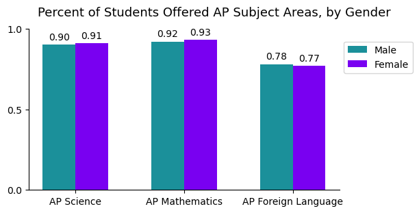
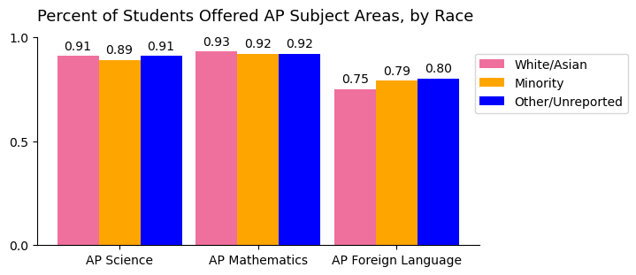
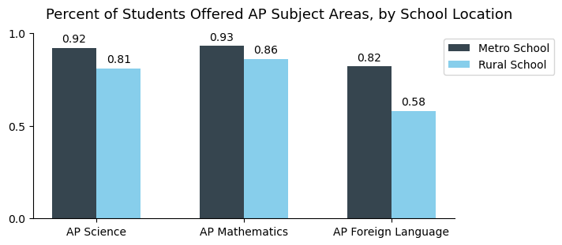
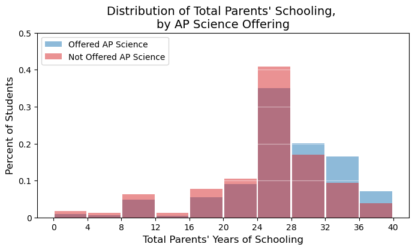
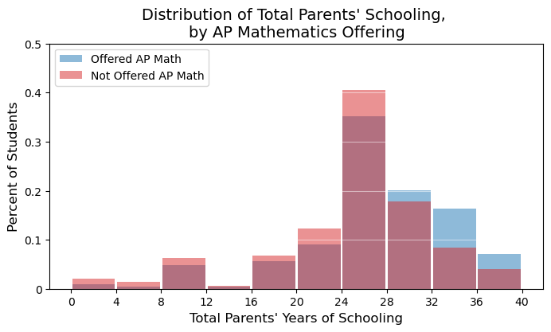
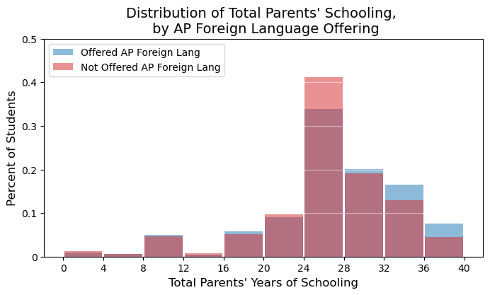

Course Access
Gender
Male and female students had access to AP Science, Mathematics, and Foreign Languages classes at approximately the same rates. For AP Science and Mathematics, that was a very high rate (more than 90%). AP Foreign Language had slightly less availability for students.
Race
In AP Science and Mathematics, all racial groups had approximately the same level of access. However, for AP Foreign Languages, white and Asian students had less access than their peers.
School Location
Students in metro area schools had more access to AP courses across all three subject categories than their rural peers. This disparity was much higher than any other demographic categorization.
Parents' Education Level
The distribution of total parents' years of education is similar for students offered and not offered at least one AP Science course. However, the distribution of students offered an AP Science course has a thicker right tail, indicating that families with at least one parent who earned a graduate degree were more likely to send their children to schools offering AP Science.
This distribution is nearly identical to the distribution for AP Science access.
This distribution is nearly identical to the distributions of both AP Science and AP Mathematics access.